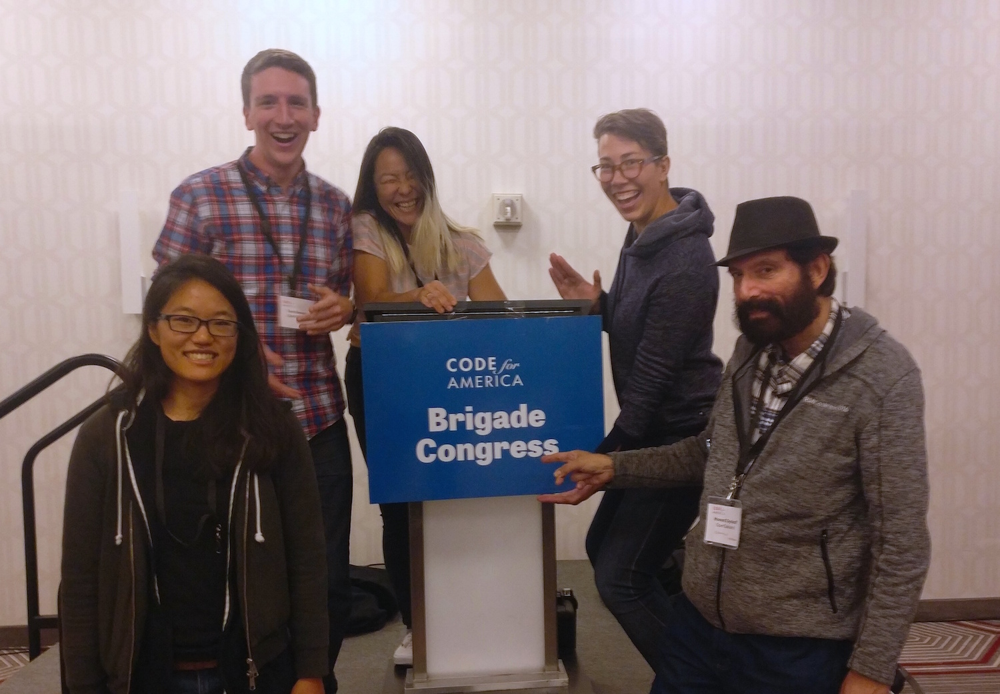

Brigade Congress Recap 2017
Last month, roughly 200 technologists of all backgrounds, locations, and occupations came together to discuss how to build the next version of the Code for America (CfA) Brigade network.

How we can build a government that works for the people, by the people, in the 21st century? Representatives from local Brigades across the country came together in Philadelphia to answer this question.
What is the Brigade network?
The Brigade program has been around for a long time. As one of the first CfA programs dating back to 2012, it's built around the idea that in order to improve government for Americans, we have to start close to home.
There are amazing folks who dedicate their week nights and free time to working on projects for residents of their cities. On a single night, civic technologists might work on projects that run the gamut from helping people understand how their government works to visualizing complex data to helping residents interact more easily with government services.
We live in a time governments must be digitally capable, and the local Brigade is what makes that possible.
Brigade History
The backdrop for the Brigade Congress meeting, though, was not all sunshine and rainbows.
In 2016, CfA resdesigned the Brigade program into a format which required more sustainability on the part of Brigades. By distancing them from the top-level organization's day-to-day, this meant that fiscal sponsorship from CfA itself would be wound down and Brigades would need to heavily invest in fundraising. Many brigades struggled to accomplish this, resulting in leadership burnout.
Since then, CfA has been working to improve relations with Brigades and help them be more successful. First, by embarking on an ambitious network-wide research and co-creation process, Brigade leaders throughout the country gave ideas on governance structures and areas of improvement for CfA. (For example, streamlining the reimbursement process for expenditures. I think most Brigade leaders would say it has improved since then!)
A concrete outcome of the process is the Brigade National Advisory Council (NAC), a group of leaders elected by the network to be the official representatives of the geographically diverse network in conversations with CfA.
But that's not all. More recently, CfA has doubled-down on building a great "Network team" at CfA. (More about that in a couple days.)
It is with this backdrop that the NAC was positioned to suggest CfA hosting the first ever Brigade Congress–a two day unconference exculsively for and by the Brigade network.
OpenOakland representing!

From left: Joanna, me, Ramy, Helen, and Howard. Not pictured: Neil, Mike.
I'm proud to have been able to represent both OpenOakland and Code for America! Although the timing of the event was right as my CfA fellowship was wrapping up, as one of OpenOakland's Hack Night Leads and a member of almost four years at this point, I felt it especially important to attend.
Overall, OpenOakland was well-represented!
To the Unconference!
But what was the event actually like?
Well, first, we all met at a datacenter for a reception. What the venue lacked in acoustics, it more than made up for in symbolism. What better location to kick off a meeting of civic technologists from across the nation than a couple floors above where the fiber cables connect our physical communication fabric together?
https://twitter.com/codeforamerica/status/918972114954317825
After the reception, it was back to the hotel for the night.
Official Kickoff
In the main conference room, the events started off with some introductions followed by lightning talks.
https://twitter.com/jhibbets/status/919551051644264448
In true unconference style, we got to dot voting on session topics.
https://twitter.com/SFbrigade/status/919204329231388672
Some of the sessions that were planned
https://twitter.com/Ryan_Koch/status/919574191623557120
https://twitter.com/City_Sostenible/status/919583358375645184
Key Takeaways
Across many sessions and conversations that happened throughout the weekend, a few themes kept recurring – Brigades from small to large face many of the same challenges. Broadly, I think these boil down into two categories:
- Structural - What is the role of the Brigade in the community? What types of project make sense to deploy/redeploy? How do we make sure that our diverse communities are represented in our organizations?
- Tactical - How can Brigades improve retention? How to build a sustainable organization when leadership changes? How to make sure that members are empowered to build projects in a way that is aligned with the organization and can be maintained?
Overall, Brigades are focused inward. OpenOakland is focused on OpenOakland, and so forth, and this is probably as it should be. However, it makes us lose touch with the broader network and miss best practices from elsewhere.
Sharing Projects between Brigades
This came up more than once at Congress. How can we take a success in one place and redeploy it somewhere else that has the same challenges?
Whenever I think of this topic, I can't get Courtbot out of my mind. Originally written by CfA fellows in Atlanta to help residents remember their court dates, it is getting new a life in Tulsa. Its promise only begins there, however. In order to fulfill the mission of Clientcomm, we need court schedule information, and Courtbot is our community-created moonshot at surfacing this information in a structured way.
But Courtbot is only the first step. There are excellent projects like mapsfor.us (Code for Atlanta) and the Homelessness Portal (Code for San Jose) that hold incredible potential to provide value across jurisdictions.
Sharing Best Practices
There was a lot of discussion around sharing best practices for organizing. Here are a couple topics:
Diversity and inclusion. How can we do it, and do it now?
https://twitter.com/TechnicallyPHL/status/919619676975529985
https://twitter.com/c_sethna/status/919213402584637441
How can we engage city partners
https://twitter.com/Ryan_Koch/status/919250944675799040
Tools to use (like journey maps) via Code for Orlando's @ErinFonziDenton
https://twitter.com/codeforamerica/status/919266564892971008
https://twitter.com/Ryan_Koch/status/919266578641965062
In Summary
Brigade Congress was a great event, and a great opportunity for us in Brigades to align around a common cause.
https://twitter.com/SFbrigade/status/919613849120182272
With this in mind, and all the connections coming out of the event, the network has never been poised for more success. Let's keep up the momentum, work together, and make our governments work for the people!